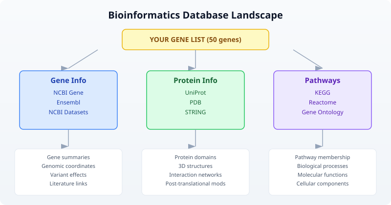
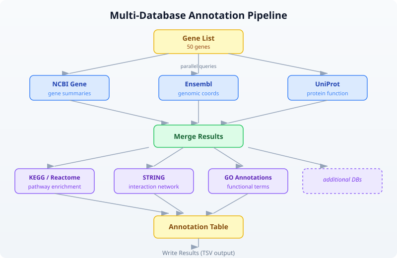
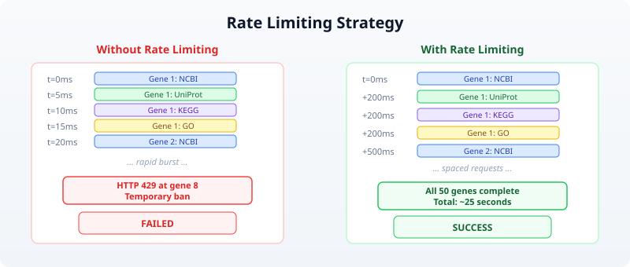

Day 24: Programmatic Database Access
| Difficulty | Intermediate |
| Biology knowledge | Intermediate (gene names, protein accessions, pathway concepts, variant notation) |
| Coding knowledge | Intermediate (functions, records, error handling, pipes, tables) |
| Time | ~3–4 hours |
| Prerequisites | Days 1–23 completed, BioLang installed (see Appendix A) |
| Data needed | Generated locally via init.bl (gene list) |
| Requirements | Internet access for all API examples |
What You’ll Learn
- Why programmatic database access replaces manual copy-paste from web browsers
- How to query NCBI for gene information and nucleotide sequences
- How to retrieve gene annotations from Ensembl and predict variant effects
- How to search UniProt for protein information and functional annotations
- How to explore metabolic pathways via KEGG and Reactome
- How to build protein interaction networks with STRING
- How to look up Gene Ontology terms and annotations
- How to compose multi-database annotation pipelines with error handling
- How to implement rate limiting and result caching strategies
The Problem
“The gene list from my experiment — what’s already known about these genes?”
You have just finished a differential expression analysis. The statistics are clean: 50 genes pass your significance threshold (adjusted p-value < 0.05, absolute log2 fold change > 1.5). You have gene symbols, fold changes, and p-values. But gene symbols alone tell you nothing about biology.
What do these genes do? What pathways are they in? Do any have known disease associations? Are the upregulated genes in the same protein complex? Does the literature already link any of them to your phenotype?
The answers live in public databases. NCBI has gene summaries and literature links. Ensembl has genomic coordinates and cross-references. UniProt has protein function and domain annotations. KEGG and Reactome have pathway maps. STRING has protein-protein interaction networks. Gene Ontology has standardized functional terms.
You could visit each database’s website, type each gene name into a search box, and copy results into a spreadsheet. For 50 genes across 8 databases, that is 400 manual searches. At two minutes each, you are looking at 13 hours of clicking and copying — and you will make mistakes.
Or you could write a script that does all 400 queries in under five minutes.
The Bioinformatics Database Landscape
Before writing code, you need to know which database answers which question. The following map shows the major public databases and their primary use cases:

Each database has a REST API. BioLang wraps these APIs as built-in functions, so you do not need to construct URLs, parse JSON responses, or handle HTTP status codes yourself.
Section 1: NCBI — The Central Hub
NCBI (National Center for Biotechnology Information) is the largest biomedical database in the world. Its Entrez system connects dozens of databases: Gene, Nucleotide, Protein, PubMed, and more.
Searching for Genes
Requires CLI: This example uses network APIs not available in the browser. Run with
bl run.
The ncbi_gene() function searches NCBI Gene by name or symbol:
let brca1 = ncbi_gene("BRCA1")
This returns a record with gene ID, description, chromosome location, and summary. The summary field is particularly valuable — it is a curated, human-written paragraph describing what the gene does.
To search across any NCBI database, use ncbi_search():
let results = ncbi_search("gene", "BRCA1 AND Homo sapiens[ORGN]")
The first argument is the database name (gene, nuccore, protein, pubmed, etc.), and the second is an Entrez query string. NCBI’s query syntax supports Boolean operators, field tags like [ORGN] for organism, and range queries.
Fetching Sequences
Once you have an accession or ID, you can fetch the actual sequence:
let seq = ncbi_sequence("nuccore", "NM_007294.4")
This retrieves the nucleotide sequence for the BRCA1 mRNA transcript. The ncbi_sequence() function takes a database name and an accession number.
NCBI Datasets
For richer, more structured gene data, NCBI Datasets provides a modern API:
let gene_data = datasets_gene("TP53")
This returns detailed gene information including genomic ranges, transcript variants, and cross-references — often more structured than the classic Entrez output.
Section 2: Ensembl — Genomic Annotations
Ensembl is the European counterpart to NCBI, maintained by EMBL-EBI. It excels at genomic coordinate mapping, cross-species comparisons, and variant annotation.
Gene Information
You can look up genes by their Ensembl ID or by symbol:
let gene_by_id = ensembl_gene("ENSG00000141510")
let gene_by_symbol = ensembl_symbol("homo_sapiens", "TP53")
The ensembl_gene() function takes an Ensembl stable ID (e.g., ENSG for genes, ENST for transcripts). The ensembl_symbol() function takes a species name and gene symbol.
Fetching Sequences
let sequence = ensembl_sequence("ENSG00000141510")
This returns the genomic sequence for the gene. Ensembl sequences include the full genomic region, not just the coding sequence.
Variant Effect Prediction
One of Ensembl’s most powerful features is VEP (Variant Effect Predictor). Given a variant in HGVS notation, VEP tells you its predicted functional consequence:
let effects = ensembl_vep("9:g.22125504G>C")
VEP returns consequence types (missense, synonymous, splice site, etc.), affected transcripts, protein changes, and pathogenicity predictions. This is essential for variant interpretation in clinical genomics.
Section 3: UniProt — Protein Knowledge
UniProt is the most comprehensive protein database. It contains manually curated protein function, domain annotations, post-translational modifications, and subcellular localization.
Searching Proteins
let results = uniprot_search("gene:BRCA1 AND organism_id:9606")
UniProt’s query syntax supports field-specific searches. The organism ID 9606 is Homo sapiens. Results include accession numbers, protein names, and review status (Swiss-Prot entries are manually curated; TrEMBL entries are automated).
Getting Protein Details
With an accession number, you can retrieve the full entry:
let entry = uniprot_entry("P38398")
The entry record contains protein name, function description, subcellular location, tissue specificity, disease associations, and cross-references to other databases. This single call often provides more biological context than any other database.
Section 4: Pathways and Ontologies
Genes do not act in isolation. Understanding which pathways and biological processes your genes participate in is often more informative than studying individual genes.
KEGG Pathways
KEGG (Kyoto Encyclopedia of Genes and Genomes) maps genes to metabolic and signaling pathways:
let pathway = kegg_get("hsa:7157")
let search = kegg_find("pathway", "apoptosis")
The kegg_get() function retrieves a specific entry by KEGG identifier. KEGG uses its own ID scheme: hsa:7157 is human gene 7157 (TP53). The kegg_find() function searches within a KEGG database.
Reactome Pathways
Reactome is another major pathway database, with more detailed reaction-level annotations:
let pathways = reactome_pathways("TP53")
This returns all Reactome pathways that include TP53. Reactome pathways are hierarchically organized, from broad categories (“Signal Transduction”) down to specific reactions (“TP53 Regulates Transcription of Cell Death Genes”).
Gene Ontology
Gene Ontology (GO) provides a standardized vocabulary for gene function, organized into three domains:
- Biological Process (BP) — what the gene does (e.g., “apoptotic process”)
- Molecular Function (MF) — how it does it (e.g., “DNA binding”)
- Cellular Component (CC) — where it does it (e.g., “nucleus”)
let term = go_term("GO:0006915")
let annotations = go_annotations("TP53")
The go_term() function retrieves details about a specific GO term. The go_annotations() function retrieves all GO annotations for a gene, across all three domains.
Section 5: Protein Networks — STRING
STRING (Search Tool for the Retrieval of Interacting Genes/Proteins) maps known and predicted protein-protein interactions:
let network = string_network(["TP53", "MDM2", "CDKN1A", "BAX", "BCL2"])
Note that string_network() takes a list of identifiers, not a single string. This is because protein interactions are inherently about relationships between multiple proteins. The result includes interaction scores (from 0 to 1) based on experimental evidence, text mining, co-expression, and genomic context.
STRING is particularly useful for understanding whether your differentially expressed genes form a connected network or are scattered across unrelated pathways.
PDB Structures
For genes with known 3D structures, the Protein Data Bank provides structural information:
let structure = pdb_entry("1TUP")
This retrieves metadata about PDB entry 1TUP (the TP53 DNA-binding domain), including resolution, experimental method, authors, and ligands.
Section 6: Building an Annotation Pipeline
Now that you know the individual databases, let us combine them into a pipeline that annotates an entire gene list. This is where BioLang’s pipe-first design shines — each annotation step flows naturally into the next.
The Pipeline Architecture

Single-Gene Annotation Function
Requires CLI: This example uses network APIs not available in the browser. Run with
bl run.
Start by writing a function that annotates one gene. Wrap each API call in try/catch because any individual query might fail (the gene might not exist in that database, or the API might be temporarily unavailable):
let annotate_gene = |symbol| {
let result = {symbol: symbol}
let gene_info = try {
ncbi_gene(symbol)
} catch err {
nil
}
let protein_info = try {
uniprot_search(f"gene:{symbol} AND organism_id:9606")
} catch err {
nil
}
let pathways = try {
reactome_pathways(symbol)
} catch err {
nil
}
let go = try {
go_annotations(symbol)
} catch err {
nil
}
{
symbol: symbol,
ncbi: gene_info,
uniprot: protein_info,
pathways: pathways,
go_terms: go
}
}
This function returns a record with all available annotations for one gene. If any database is unreachable or the gene is not found, that field is nil rather than crashing the entire pipeline.
Annotating a Gene List
With the single-gene function defined, annotating an entire list is a single pipe:
let genes = ["TP53", "BRCA1", "EGFR", "KRAS", "MYC"]
let annotations = genes |> map(|g| annotate_gene(g))
This produces a list of annotation records. Each record contains everything we know about that gene from four different databases.
Rate Limiting
Public APIs have rate limits. NCBI allows 3 requests per second without an API key (10 with one). Ensembl allows 15 requests per second. UniProt allows roughly 25 requests per second.
When you annotate 50 genes with 4 API calls each, you are making 200 requests. Without rate limiting, you will hit rate limits and get errors or temporary bans.
The simplest rate-limiting strategy is to add a delay between requests:
let annotate_with_delay = |symbol| {
let result = annotate_gene(symbol)
sleep(500)
result
}
let annotations = genes |> map(|g| annotate_with_delay(g))
The sleep(500) call pauses for 500 milliseconds (half a second) between genes. This keeps you well under all rate limits.
Rate Limiting Strategy

For 50 genes at 500ms each, the total runtime is about 25 seconds. That is far better than 13 hours of manual browsing.
Section 7: Error Handling for API Calls
Network requests fail. Servers go down. Genes have different names in different databases. A robust annotation pipeline handles all of these cases.
Retry Logic
Some failures are transient — a server timeout, a momentary network glitch. For these, retrying often works:
let retry = |f, max_attempts| {
let attempt = 1
let result = nil
let success = false
while attempt <= max_attempts and !success {
let outcome = try {
f()
} catch err {
nil
}
if outcome != nil {
result = outcome
success = true
} else {
attempt = attempt + 1
sleep(1000 * attempt)
}
}
result
}
This function takes a zero-argument closure and retries it up to max_attempts times, with exponential backoff (1 second after the first failure, 2 seconds after the second, etc.).
Use it in your annotation pipeline:
let safe_ncbi = |symbol| retry(|| ncbi_gene(symbol), 3)
Collecting Errors
Rather than silently swallowing errors, track them so you can report which genes failed and why:
let annotate_with_tracking = |symbol| {
let errors = []
let gene_info = try {
ncbi_gene(symbol)
} catch err {
errors = errors + [f"NCBI: {err}"]
nil
}
let protein = try {
uniprot_search(f"gene:{symbol} AND organism_id:9606")
} catch err {
errors = errors + [f"UniProt: {err}"]
nil
}
{
symbol: symbol,
ncbi: gene_info,
uniprot: protein,
errors: errors,
error_count: len(errors)
}
}
After annotating all genes, you can filter for problematic ones:
let failed = annotations |> filter(|a| a.error_count > 0)
Section 8: Caching Results
If you run your annotation pipeline multiple times during development, you are making the same API calls repeatedly. This wastes time and strains public servers. A simple file-based cache avoids redundant queries.
Write-Through Cache Pattern
let cached_query = |name, query_fn| {
let cache_file = f"data/cache/{name}.json"
let cached = try {
read(cache_file) |> json_decode()
} catch err {
nil
}
if cached != nil {
cached
} else {
let result = query_fn()
let json = result |> json_encode()
write(cache_file, json)
result
}
}
Use it to wrap any API call:
let tp53_ncbi = cached_query("tp53_ncbi", || ncbi_gene("TP53"))
The first call hits the API and saves the result to disk. Subsequent calls read from disk, completing instantly. This pattern is especially valuable during pipeline development, when you re-run the script dozens of times while tweaking downstream analysis steps.
Section 9: Cross-Database Integration
The real power of programmatic access emerges when you combine data from multiple databases into a unified view. Each database contributes a different facet of biological knowledge.
Multi-Database Annotation Table
Requires CLI: This example uses network APIs not available in the browser. Run with
bl run.
Here is a complete pipeline that builds an annotation table from multiple sources:
let build_annotation = |symbol| {
let ncbi = try { ncbi_gene(symbol) } catch err { nil }
sleep(200)
let ensembl = try { ensembl_symbol("homo_sapiens", symbol) } catch err { nil }
sleep(200)
let uniprot = try { uniprot_search(f"gene:{symbol} AND organism_id:9606") } catch err { nil }
sleep(200)
let pathways = try { reactome_pathways(symbol) } catch err { nil }
sleep(200)
{
symbol: symbol,
ncbi_summary: if ncbi != nil { str(ncbi) } else { "N/A" },
ensembl_id: if ensembl != nil { str(ensembl) } else { "N/A" },
uniprot_hit: if uniprot != nil { str(uniprot) } else { "N/A" },
pathway_count: if pathways != nil { len(pathways) } else { 0 }
}
}
let genes = read_csv("data/gene_list.csv")
|> select("symbol")
let symbols = genes |> map(|row| row.symbol)
let results = symbols |> map(|s| build_annotation(s))
let annotation_table = results |> to_table()
write_csv(annotation_table, "data/annotations.csv")
This pipeline reads a gene list, queries four databases per gene with rate limiting, builds a structured record per gene, converts to a table, and writes the result. The entire workflow is 25 lines of BioLang.
The Annotation Pipeline Flow
Input: gene_list.csv Output: annotations.csv
┌────────────────┐ ┌─────────────────────────────┐
│ symbol │ │ symbol | ncbi_summary | ... │
│ ────── │ │ ────── | ──────────── | ... │
│ TP53 │──┐ │ TP53 | Tumor prot...| ... │
│ BRCA1 │ │ Per gene: │ BRCA1 | BRCA1 DNA ..| ... │
│ EGFR │ ├─► NCBI │ EGFR | Epidermal ..| ... │
│ KRAS │ ├─► Ensembl │ KRAS | GTPase KRa..| ... │
│ MYC │ ├─► UniProt │ MYC | Transcripti..| ... │
│ ... │ ├─► Reactome │ ... | ... | ... │
└────────────────┘ │ (200ms delay) └─────────────────────────────┘
│
└─► to_table() ──► write_csv()
Section 10: Practical Patterns
Pattern 1: Gene Symbol to Protein Structure
Find whether a gene’s protein has a solved 3D structure:
let has_structure = |symbol| {
let uniprot = try { uniprot_entry(symbol) } catch err { nil }
let pdb_ids = if uniprot != nil {
try { uniprot_search(f"gene:{symbol} AND database:pdb AND organism_id:9606") } catch err { nil }
} else {
nil
}
{symbol: symbol, has_pdb: pdb_ids != nil}
}
Pattern 2: Variant Annotation
Given a list of variants in HGVS notation, predict their functional effects:
let annotate_variant = |hgvs| {
let vep = try { ensembl_vep(hgvs) } catch err { nil }
sleep(200)
{variant: hgvs, effects: vep}
}
let variants = ["9:g.22125504G>C", "17:g.43093449G>A"]
let effects = variants |> map(|v| annotate_variant(v))
Pattern 3: Interaction Subnetwork
Given your differentially expressed genes, find which ones interact:
let de_genes = ["TP53", "MDM2", "CDKN1A", "BRCA1", "EGFR"]
let network = try {
string_network(de_genes)
} catch err {
nil
}
This reveals whether your gene list forms a connected network (suggesting a shared pathway) or consists of isolated nodes (suggesting independent effects).
Exercises
Exercise 1: Five-Gene Annotation Report
Write a script that takes five gene symbols and produces a TSV file with columns: symbol, ncbi_found (true/false), ensembl_id (or “N/A”), uniprot_accession (or “N/A”), pathway_count, go_term_count. Use try/catch for every API call and include 300ms delays between genes.
Genes to annotate: TP53, BRCA1, EGFR, KRAS, MYC
Exercise 2: Variant Effect Batch Processor
Write a function that takes a list of HGVS variant strings, runs ensembl_vep() on each with rate limiting, and returns a table of results. Handle failures gracefully — a failed VEP lookup should produce a row with “error” in the consequence column rather than crashing.
Exercise 3: Pathway Overlap Finder
Given two gene lists (e.g., upregulated and downregulated), use reactome_pathways() to find pathways that contain genes from both lists. These shared pathways suggest biological processes that are being actively remodeled.
Exercise 4: Build a Cache Layer
Wrap the annotation pipeline from Section 6 with file-based caching (Section 8). The first run should query all APIs and save results to data/cache/. The second run should complete in under one second by reading from cache. Verify by timing both runs.
Key Takeaways
-
Public databases are APIs, not websites. Every major bioinformatics database has a programmatic interface. BioLang wraps these as built-in functions, so you write
ncbi_gene("TP53")instead of constructing HTTP requests. -
Different databases answer different questions. NCBI for gene summaries, Ensembl for genomic coordinates and variant effects, UniProt for protein function, KEGG and Reactome for pathways, STRING for interaction networks, GO for standardized functional terms.
-
Always handle errors. API calls fail for many reasons: gene not found, server down, rate limit exceeded, network timeout. Wrap every call in
try/catchand design your pipeline to tolerate partial failures. -
Rate limiting is not optional. Public APIs serve millions of researchers. Adding a
sleep(200)between calls is a small cost that prevents you from being blocked and keeps the service available for everyone. -
Cache aggressively during development. Gene annotations change slowly (monthly at most). Save API results to files so you can iterate on downstream analysis without repeating queries.
-
Cross-database integration multiplies value. A gene name from NCBI, a protein accession from UniProt, pathway membership from Reactome, and interaction data from STRING — combined, these tell a story that no single database can tell alone.
Next: Day 25 — Workflow Orchestration, where we chain analysis steps into reproducible, automated pipelines.